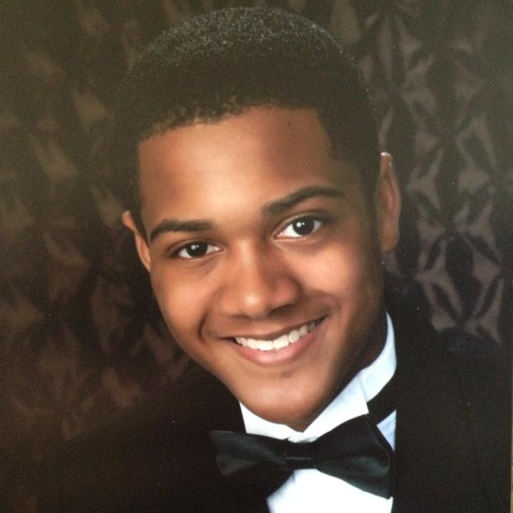

Cameron A. Mayes
I am currently a senior at James Madison University located in Harrisonburg, VA. I am majoring in Computer Science where my main interests reside in software development and as you can see from this creation of mine, web development! Currently, I am interning as a Technical Analyst at Accenture Federal this summer and I hope to use this experience to gain valuable experience that I can take with me after graduating next May. Aside from all that, this website was created over the summer of 2016 and is currently being hosted via GitHub.
Ever since I was little I have always been interested in creating things. However, between playing sports and other doing other hobbies I was never formally introduced to the area of programming until I got to college. I entered my university declared as an engineering major but quickly switched to computer science and the rest is history!
Aside from academia, one of my favorite activites is playing billiards. I started serioulsy playing at the beginning of my sophomore year with friends in the billiards club. I found that it provided a nice mental break after spending large amounts of time programming and it is something I definitely plan to keep pursuing. Other than that, I generally enjoy any outdoors activity ranging from a leisurely hike to intense spelunking (I'm in caving club). Lastly but certainly not least, I am also a proud member and VP of my chapter of Kappa Alpha Psi Fraternity Inc.
Further course descriptions can be found here: JMU CS course catalog
CS 361. Computer Systems II, Fall 2016
CS 345. Software Engineering, Fall 2016
CS 327. Discrete Structures II, Fall 2016
CS 240. Algorithms and Data Structures, Spring 2016
CS 261. Computer Systems I, Spring 2016
CS 159. Advanced Programming, Fall 2015
CS 139. Program Fundamentals, Spring 2015
CS 227. Discrete Structures I, Spring 2015